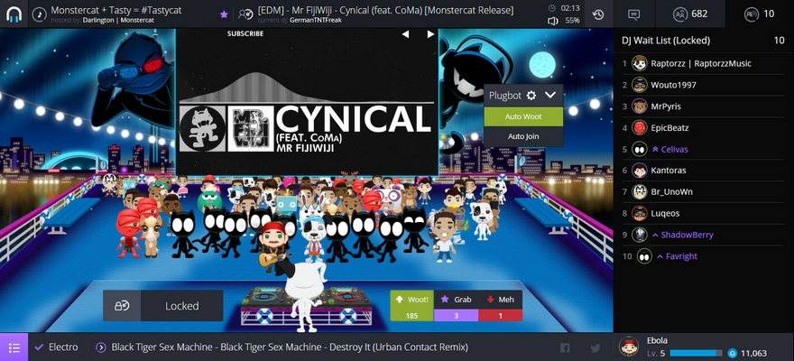
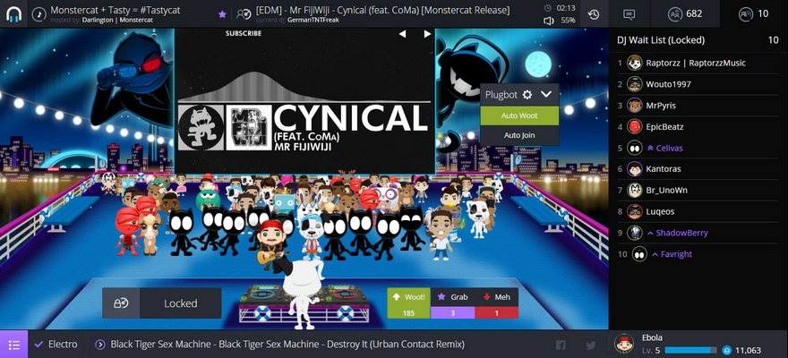

Plug.bot Enhanced

Features
- Auto Woot
- Auto Join
- Media Link
Install
Bookmarklet
Drag the following link into the bookmarks bar:
- Minified version
How to Use
Enter a plug.dj room and click the bookmarklet.

Drag the following link into the bookmarks bar:
Enter a plug.dj room and click the bookmarklet.